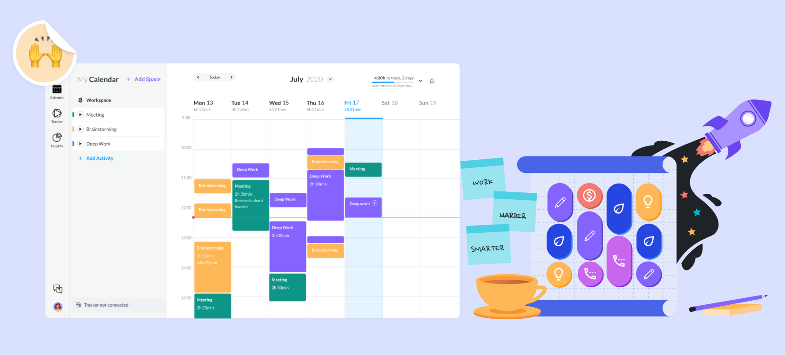
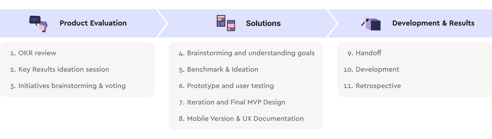
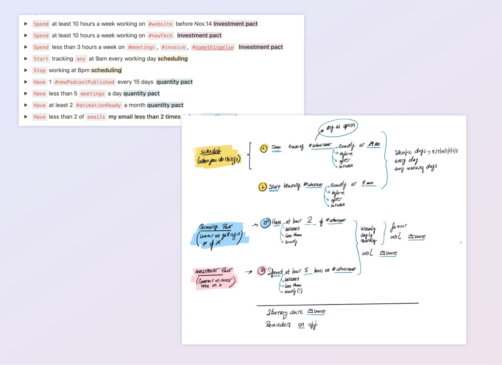
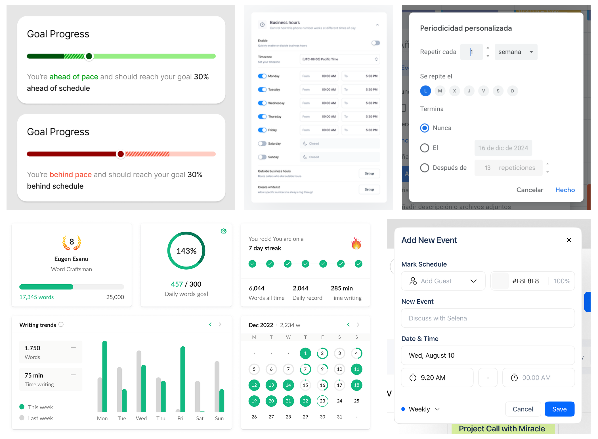
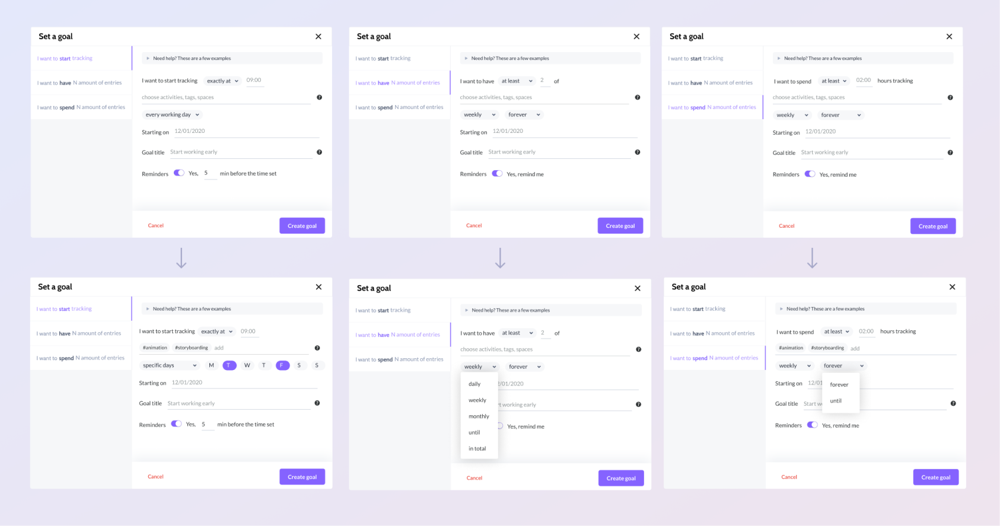
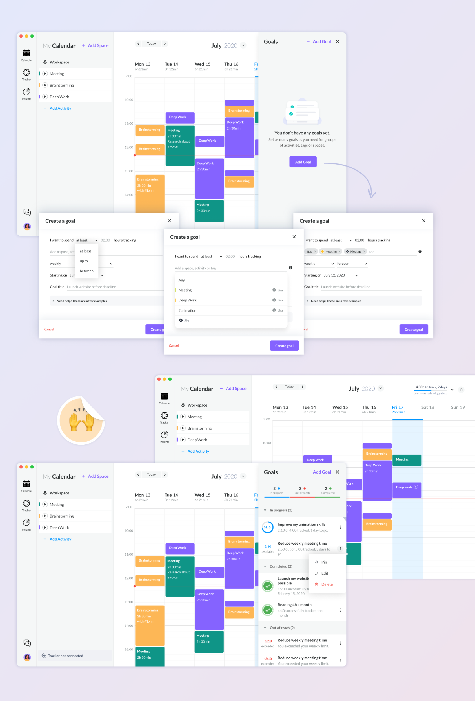
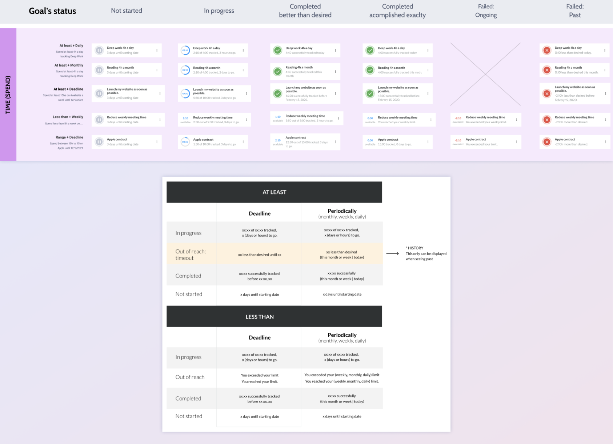
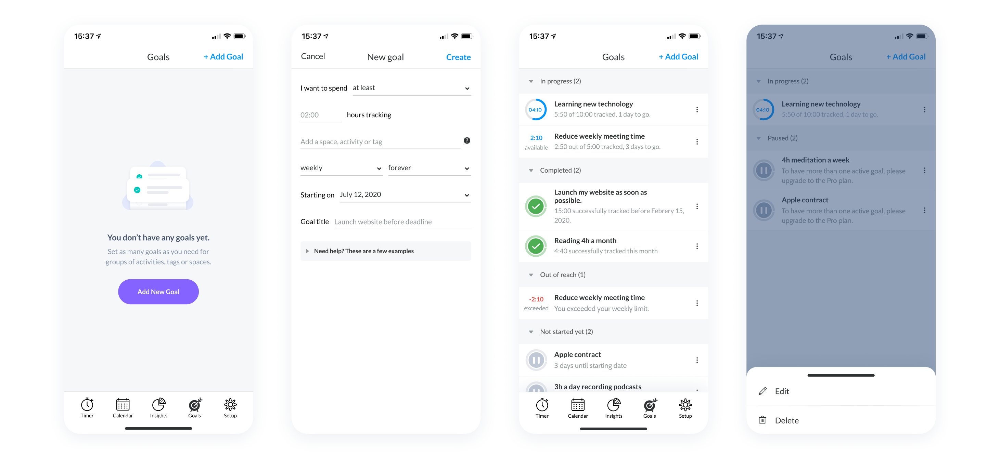

Timeular: Meet Your Goals
Austria · 2021 · Lead Product Designer
The Problem
Timeular is a time-tracking tool for individuals and teams — freelancers managing multiple clients, agencies tracking billable hours, students working toward academic deadlines. Users were already tracking their time, but that data wasn't connected to anything actionable. There was no way to set targets, measure progress against them, or understand whether how you were spending your time was actually moving you toward your goals.
The team identified a consistent pattern across user groups: people had clear ambitions but no structured way to commit to them inside the product. The missing piece was a goal-setting feature that could accommodate the variety of ways different users think about goals — not just hours spent, but scheduling habits, output quantities, and time boundaries.
Team
- Lead Designer: Stefania
- Manager: CEO and CTO
- Collaborators: Development team. Timeular used an OKR-based process where the full team contributed proposals — design decisions were regularly reviewed in cross-functional sessions.

Ideation: Mapping Goal Types
Before designing anything, I needed to understand the full range of goals users would actually want to set. Through brainstorming and early user conversations, three structurally distinct goal types emerged:
- Scheduling goals: commitments about when to work — start tracking at 9am every working day, stop working at 6pm.
- Quantity pacts: commitments about how much — have at least 2 animation files ready per month, have fewer than 5 meetings per day.
- Investment pacts: commitments about time invested — spend at least 10 hours a week on a project, spend less than 3 hours on invoicing.
Each type had different configuration needs, different progress states, and different ways of measuring success or failure. This taxonomy became the foundation for every design decision that followed — UI structure, card states, copy, and the MVP scope.

Benchmark
I analyzed how other tools approach goal visualization and progress feedback. Progress bars and circular counters emerged as the clearest patterns for communicating how far along a user is relative to their target. Google Calendar's scheduling interface was particularly relevant for the scheduling goal type — its approach to recurring time blocks informed how I designed the goal creation flow for time-based commitments.
The benchmark also confirmed that "ahead of pace" vs. "behind pace" feedback — not just raw progress — was a meaningful signal for users managing time-bound goals. That framing carried into the card design.

Prototype and User Testing
With the goal taxonomy defined and benchmark insights in hand, I built an interactive prototype covering all three goal types. Testing began with interviews: I presented users with real-life scenarios relevant to their work — a freelancer managing project hours, a student tracking thesis writing time — and observed how they interacted with the goal creation and tracking flows.
Each session ended with open feedback on whether the feature matched their mental model of goal-setting and whether the progress feedback felt meaningful. Key findings shaped the final design: users needed concrete examples during goal creation to understand what each goal type could do, and the progress state needed to communicate not just quantity but trajectory — whether they were on track or falling behind.

MVP Scope Decision
User testing confirmed that the investment pact — spending a set amount of time on something — was by far the most common goal type across user segments. Rather than launching all three types simultaneously and risking a complex, undertested experience, the team decided to release the hours-based goal first, collect feedback on real usage, and build toward the full feature set iteratively.
This was a deliberate Lean UX decision: launch the smallest version that delivers real value, learn from actual behavior, and use that to validate assumptions about the less common goal types before investing in building them.

UX Documentation: Card Behavior
The goal card needed to handle a large matrix of states: different goal types, different progress levels, deadline vs. periodic goals, and six possible statuses (not started, in progress, completed better than desired, completed exactly, failed ongoing, failed past). I documented every combination systematically — defining exactly what copy and visual treatment applied to each state — so the engineering team had clear, unambiguous specs for every scenario.
Two key decisions came out of this work: the counter visualization is used when a deadline is set (communicating urgency), while a progress bar is used for open-ended periodic goals (communicating accumulation). Copy is fully dynamic based on the specific goal configuration and its current status.

Mobile App
The goals feature needed to be fully functional on mobile — for many Timeular users, the mobile app is their primary interface. I adapted the desktop designs for the mobile app, maintaining the same goal creation flow and card states while optimizing layout and interactions for a small screen context.

Impact and Learnings
The goal taxonomy developed at the start of this project turned out to be the most consequential design decision. Having a clear structural model for what a "goal" could be — scheduling, quantity, or investment — made every subsequent decision faster and more consistent, from card states to copy to MVP prioritization. It also gave the engineering team a shared language for implementation.
The MVP scope decision was validated by user behavior after launch: investment pacts (hours-based goals) were the dominant use case, confirming that launching the simpler version first was the right call. Starting with a narrower scope also meant the feature shipped with well-documented edge cases rather than a broader, less-tested surface.
The card behavior documentation — mapping every combination of goal type, configuration, and status — was more work upfront but significantly reduced back-and-forth during development. For features with high state complexity, that kind of systematic spec pays for itself.